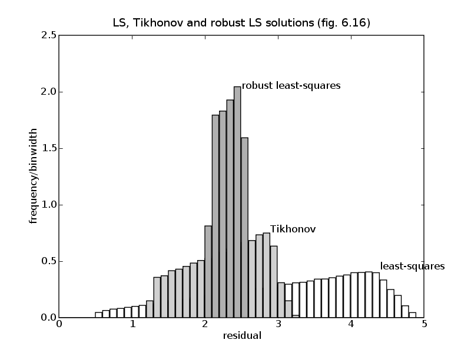
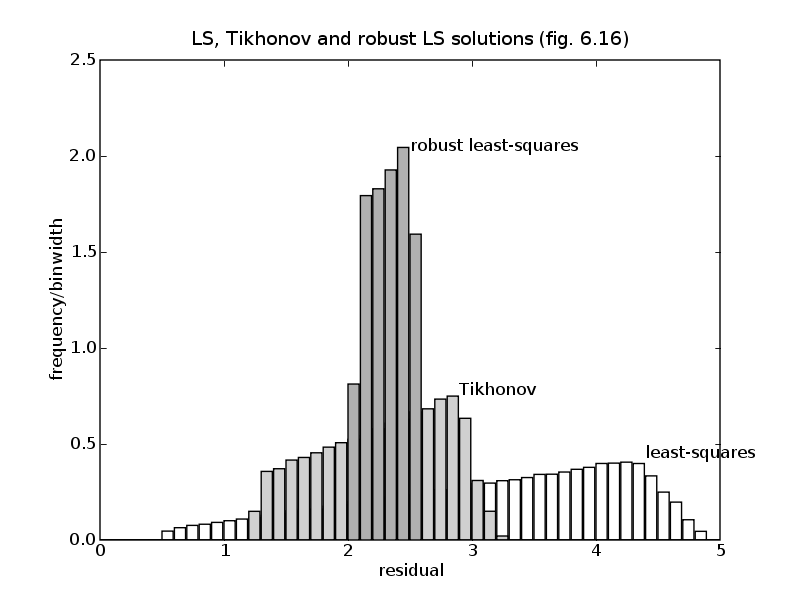

# Figures 6.15 and 6.16, pages 320 and 325.
# Stochastic and worst-case robust approximation.
from math import pi
from cvxopt import blas, lapack, solvers
from cvxopt import matrix, spmatrix, mul, cos, sin, sqrt, uniform
from pickle import load
solvers.options['show_progress'] = 0
try: import pylab, numpy
except ImportError: pylab_installed = False
else: pylab_installed = True
def wcls(A, Ap, b):
"""
Solves the robust least squares problem
minimize sup_{||u||<= 1} || (A + sum_k u[k]*Ap[k])*x - b ||_2^2.
A is mxn. Ap is a list of mxn matrices. b is mx1.
"""
(m, n), p = A.size, len(Ap)
# minimize t + v
# subject to [ I * * ]
# [ P(x)' v*I -* ] >= 0.
# [ (A*x-b)' 0 t ]
#
# where P(x) = [Ap[0]*x, Ap[1]*x, ..., Ap[p-1]*x].
#
# Variables x (n), v (1), t(1).
novars = n + 2
M = m + p + 1
c = matrix( n*[0.0] + 2*[1.0])
Fs = [spmatrix([],[],[], (M**2, novars))]
for k in range(n):
# coefficient of x[k]
S = spmatrix([], [], [], (M, M))
for j in range(p):
S[m+j, :m] = -Ap[j][:,k].T
S[-1, :m ] = -A[:,k].T
Fs[0][:,k] = S[:]
# coefficient of v
Fs[0][(M+1)*m : (M+1)*(m+p) : M+1, -2] = -1.0
# coefficient of t
Fs[0][-1, -1] = -1.0
hs = [matrix(0.0, (M, M))]
hs[0][:(M+1)*m:M+1] = 1.0
hs[0][-1, :m] = -b.T
return solvers.sdp(c, None, None, Fs, hs)['x'][:n]
# Figure 6.15
data = load(open('robls.bin','rb'))['6.15']
A, b, B = data['A'], data['b'], data['B']
m, n = A.size
# Nominal problem: minimize || A*x - b ||_2
xnom = +b
lapack.gels(+A, xnom)
xnom = xnom[:n]
# Stochastic problem.
#
# minimize E || (A+u*B) * x - b ||_2^2
# = || A*x - b||_2^2 + x'*P*x
#
# with P = E(u^2) * B'*B = (1/3) * B'*B
S = A.T * A + (1.0/3.0) * B.T * B
xstoch = A.T * b
lapack.posv(S, xstoch)
# Worst case approximation.
#
# minimize max_{-1 <= u <= 1} ||A*u - b||_2^2.
xwc = wcls(A, [B], b)
nopts = 500
us = -2.0 + (2.0 - (-2.0))/(nopts-1) * matrix(list(range(nopts)),tc='d')
rnom = [ blas.nrm2( (A+u*B)*xnom - b) for u in us ]
rstoch = [ blas.nrm2( (A+u*B)*xstoch - b) for u in us ]
rwc = [ blas.nrm2( (A+u*B)*xwc - b) for u in us ]
if pylab_installed:
pylab.figure(1, facecolor='w')
pylab.plot(us, rnom, us, rstoch, us, rwc)
pylab.plot([-1, -1], [0, 12], '--k', [1, 1], [0, 12], '--k')
pylab.axis([-2.0, 2.0, 0.0, 12.0])
pylab.xlabel('u')
pylab.ylabel('r(u)')
pylab.text(us[9], rnom[9], 'nominal')
pylab.text(us[9], rstoch[9], 'stochastic')
pylab.text(us[9], rwc[9], 'worst case')
pylab.title('Robust least-squares (fig.6.15)')
# Figure 6.16
data = load(open('robls.bin','rb'))['6.16']
A, Ap, b = data['A0'], [data['A1'], data['A2']], data['b']
(m, n), p = A.size, len(Ap)
# least squares solution: minimize || A*x - b ||_2^2
xls = +b
lapack.gels(+A, xls)
xls = xls[:n]
# Tikhonov solution: minimize || A*x - b ||_2^2 + 0.1*||x||^2_2
xtik = A.T*b
S = A.T*A
S[::n+1] += 0.1
lapack.posv(S, xtik)
# Worst case solution
xwc = wcls(A, Ap, b)
notrials = 100000
r = sqrt(uniform(1,notrials))
theta = 2.0 * pi * uniform(1,notrials)
u = matrix(0.0, (2,notrials))
u[0,:] = mul(r, cos(theta))
u[1,:] = mul(r, sin(theta))
# LS solution
q = A*xls - b
P = matrix(0.0, (m,2))
P[:,0], P[:,1] = Ap[0]*xls, Ap[1]*xls
r = P*u + q[:,notrials*[0]]
resls = sqrt( matrix(1.0, (1,m)) * mul(r,r) )
q = A*xtik - b
P[:,0], P[:,1] = Ap[0]*xtik, Ap[1]*xtik
r = P*u + q[:,notrials*[0]]
restik = sqrt( matrix(1.0, (1,m)) * mul(r,r) )
q = A*xwc - b
P[:,0], P[:,1] = Ap[0]*xwc, Ap[1]*xwc
r = P*u + q[:,notrials*[0]]
reswc = sqrt( matrix(1.0, (1,m)) * mul(r,r) )
if pylab_installed:
pylab.figure(2, facecolor='w')
pylab.hist(list(resls), numpy.array([0.1*k for k in range(50)]), fc='w',
normed=True)
pylab.text(4.4, 0.4, 'least-squares')
pylab.hist(list(restik), numpy.array([0.1*k for k in range(50)]), fc='#D0D0D0',
normed=True)
pylab.text(2.9, 0.75, 'Tikhonov')
pylab.hist(list(reswc), numpy.array([0.1*k for k in range(50)]), fc='#B0B0B0',
normed=True)
pylab.text(2.5, 2.0, 'robust least-squares')
pylab.xlabel('residual')
pylab.ylabel('frequency/binwidth')
pylab.axis([0, 5, 0, 2.5])
pylab.title('LS, Tikhonov and robust LS solutions (fig. 6.16)')
pylab.show()
 
